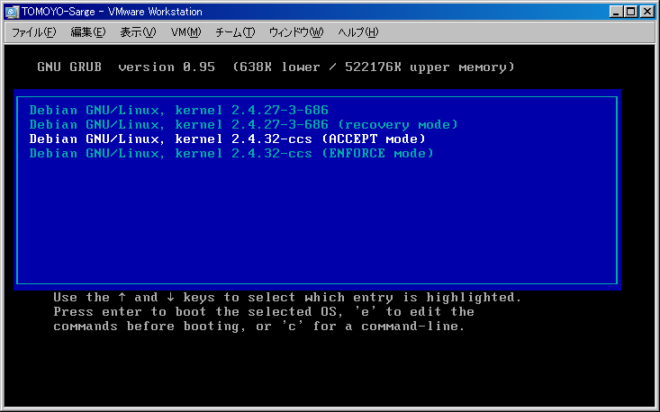
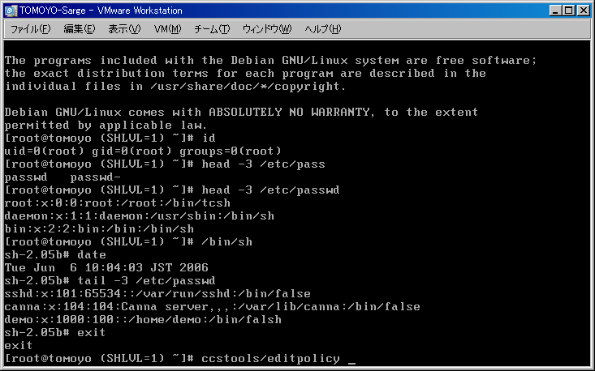
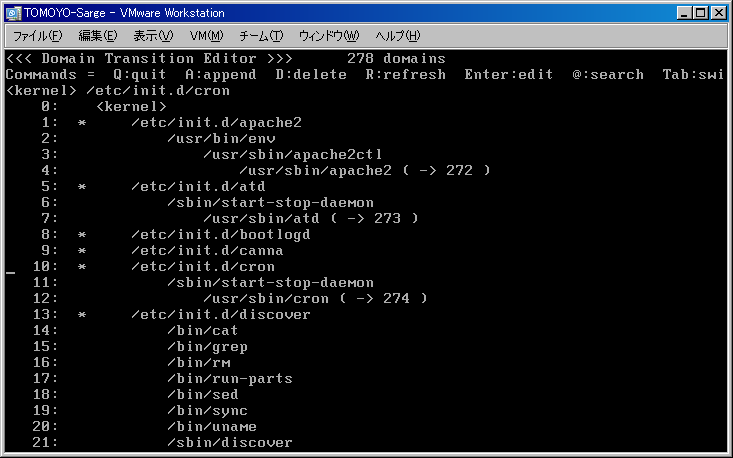
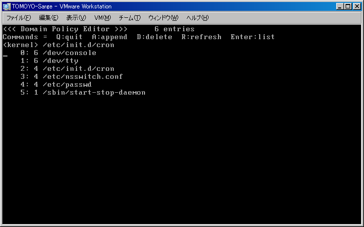
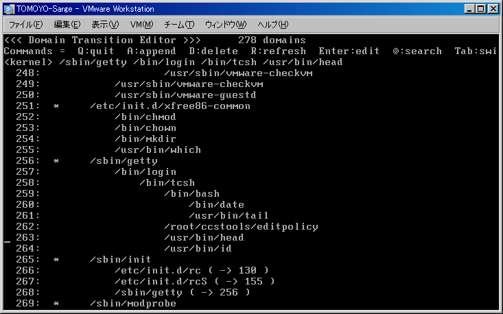
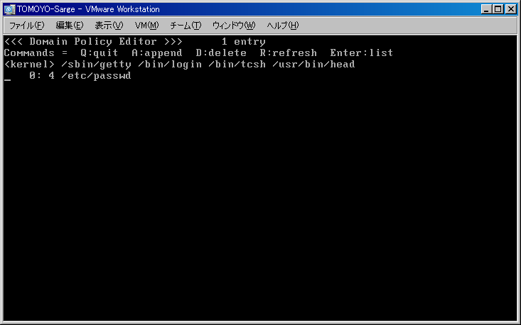
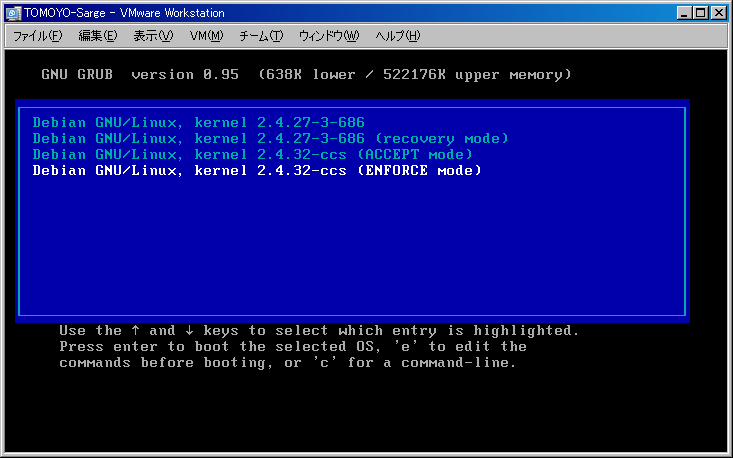
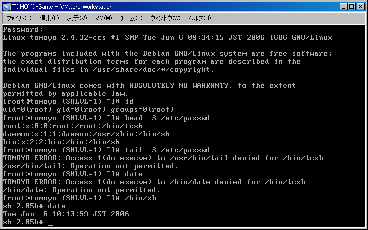

This page contains a translation of IT Pro's article written in Japanese published at https://itpro.nikkeibp.co.jp/article/COLUMN/20051125/225219/.
This is an updated and modified version for Debian Sarge users.
(Author: Toshiharu Harada at NTT DATA CORPORATION)
TOMOYO Linux is a technology to improve Linux's security originally developed by NTT DATA CORPORATION, Japan. TOMOYO Linux was released on November, 11, 2005 as an open source software under the GPL. TOMOYO Linux is a mechanism called Secure OS, which can perform fine grained access control by breaking access permissions into parts like SELinux.
The problem of Secure OS is that it is difficult to configure appropriately. To solve this problem, TOMOYO Linux adopted "Automatic Configuration based on Access Tracing" approach. TOMOYO Linux is used for the in-company WWW server for more than 18 months without troubles, and also used for an external system. NTT DATA CORPORATION is considering positive adoption of TOMOYO Linux for constructing open-sourced systems to improve security.
TOMOYO Linux is provided in the form of patches for vanilla Linux kernels. Therefore, the users have to prepare appropriate kernel configurations depending on their distributions and environments, and it is rather difficult for users who don't have experiences of kernel compilation. So, this article demonstrates the procedure of introducing TOMOYO Linux on Debian Sarge, generating policy for access controls automatically, and enforcing access controls so that you can find only operations allowed by automatically generated policy are permitted. To avoid the dependency of hardware environments, this article assumes running Debian Sarge on VMware.
You surely can introduce and use TOMOYO Linux by following this procedure. Experience the world of TOMOYO Linux and Mandatory Access Control, using binary kernel packages.
The security enhancement at OS level is vital to improve the system's security. Conventional security managements are mainly at application level, and administrators have to apply security patches whenever vulnerability was found in applications. But it is laborious for administrators, for they have to confirm that applying security patches don't disturb their systems.
To enhance security at OS level, a method called "Mandatory Access Control"(MAC) is used in many cases. By introducing MAC, OS can restrict application's behavior responsibly. Therefore, it is possible to minimize the damage if vulnerability was found in applications and exploited, for OS restricts application's behavior. A Linux without MAC support gets completely vulnerable if ftp service, for example, has vulnerability and is exploited. But, a Linux with MAC support won't get completely vulnerable, for the damage is confined to resources that the service is allowed to access.
As shown above, MAC is a very effective method to improve the system's security. But to let the OS restrict application's behavior, the administrator has to tell rules that define "What behaviors are allowed and what behaviors are not allowed" to the OS. These rules are called "Policy". In Linux 2.6 kernels, SELinux is built-in that performs MAC based on the policy.
But the policy of SELinux is very complicated and only highly skilled administrators can define appropriate SELinux's policy. Therefore, NTT DATA CORPORATION has developed TOMOYO Linux to greatly reduce the burden of policy definition so that administrators with standard Linux server administration skills can manage. TOMOYO Linux is the acronym for "Task Oriented Management Obviates Your Onus on Linux".
The most important feature of TOMOYO Linux is that TOMOYO Linux has "accept mode". This mode can generate policy automatically that allows operations the administrator performed and forbids all other operations the administrator didn't perform. This means that you can get appropriate policy by just doing a series of operations you wish to allow. This is what SELinux can't copy.
Some people might say "I don't trust on automatic policy generation", but the architecture of TOMOYO Linux made it sensible, as listed below.
The first point is that TOMOYO Linux uses PATHNAME based access control.
SELinux assigns one LABEL to one or more files, and the administrator grants permissions using the LABEL (i.e. 1-or-more-files-at-a-time basis). TOMOYO Linux doesn't assign LABEL, and the administrator grants permissions using PATHNAME (i.e. 1-file-at-a-time basis). This means TOMOYO Linux can grant permissions to minimal files compared to SELinux. (SELinux can grant minimal permissions to files compared to TOMOYO Linux.) Also, the administrator can understand the generated policy at a glance because policies are defined using PATHNAME.
The second point is that TOMOYO Linux performs DOMAIN transition (used to switch the range of resources and access modes that the processes or users can access) whenever a program is invoked.
In SELinux, the granularity of DOMAIN division is user-defined, and the administrator determines whether to transit DOMAIN or not when a program is invoked. A strong agreement on LABEL assignments and DOMAIN divisions is essential between policy suppliers (policy provider who likely has developed applications, and maybe highly skilled administrators) and policy users (the administrators). Attempts to mix partial policies without this agreement annoy the administrator.
In TOMOYO Linux, the granularity of DOMAIN division is system-defined. There is no need to agree on LABEL assignments and DOMAIN divisions, offering greater flexibility to both application developers and administrators. The DOMAIN is divided automatically based on the process's program invocation history, and this allows administrators grant minimal permissions depending on their needs. Also, since DOMAIN transition is tree-structured, it is easy to understand.
These architectures made automatic policy generation for practical use, which is difficult for SELinux.
Now, let's start introducing TOMOYO Linux.
I use Debian Sarge installed on VMware environment for this tutorial. I use debian-31r1a-i386-netinst.iso for installation. I choose "All files in one partition (recommended for new users)" configuration.
After "Debian base system configuration" finishes, login as root and run "apt-setup".
| # apt-setup |
Choose some servers for downloading packages.
You need to install the following packages.
| # apt-get install wget |
You may install additional packages as you want. The X desktop environment is not required for TOMOYO Linux, for all operations are possible from local console or ssh terminal. I choose the following packages.
| # apt-get install ssh less emacs21 tcsh |
Download binary kernel, TOMOYO Linux tools, and predefined policy for this tutorial.
|
# cd /root/ # wget -O kernel-image-2.4.27-10sarge4-ccs_1.2_i586.deb 'https://osdn.jp/frs/redir.php?m=jaist&f=/tomoyo/21518/kernel-image-2.4.27-10sarge4-ccs_1.2_i586.deb' # wget -O ccs-tools-1.2-i386-Sarge.tar.gz 'https://osdn.jp/frs/redir.php?m=jaist&f=/tomoyo/21518/ccs-tools-1.2-i386-Sarge.tar.gz' # wget https://tomoyo.osdn.jp/en/1.2/kickstart/policy-vm-sarge.tar.gz |
Install kernel and utility.
|
# dpkg -i kernel-image-2.4.27-10sarge4-ccs_1.2_i586.deb # tar -zxf ccs-tools-1.2-i386-Sarge.tar.gz |
Add the following lines to the end of /boot/grub/menu.lst using arbitrary editors (such as vi, emacs).
|
title Debian GNU/Linux, kernel 2.4.27-10sarge4-ccs (ACCEPT mode) root (hd0,0) kernel /boot/vmlinuz-2.4.27-10sarge4-ccs root=/dev/sda1 ro CCS=0 initrd /boot/initrd.img-2.4.27-10sarge4-ccs savedefault boot title Debian GNU/Linux, kernel 2.4.27-10sarge4-ccs (ENFORCE mode) root (hd0,0) kernel /boot/vmlinuz-2.4.27-10sarge4-ccs root=/dev/sda1 ro CCS=1 initrd /boot/initrd.img-2.4.27-10sarge4-ccs savedefault boot |
You can boot with TOMOYO Linux kernel if you choose "kernel 2.4.27-10sarge4-ccs" menus.
Since the purpose of this tutorial is to experience the TOMOYO Linux's automatic policy generation, this tutorial uses predefined policy optimized for Debian Sarge. You need to define policy manually for actual system because the content of policy depends on applications you have installed and their configurations.
Run the following commands to install predefined policy.
|
# mkdir -p /root/security # cd /root/security/ # tar -zxf /root/policy-vm-sarge.tar.gz # ls exception_policy.txt manager.txt profile0.txt profile1.txt |
Since TOMOYO Linux supports various access control functionalities, you can selectively enable ones using a definition file called "profile".
/root/security/profile0.txt contains configuration that enables MAC for file access in "accept mode", and is loaded when the option CCS=0 is given to the kernel's commandline.
/root/security/profile1.txt contains configuration that enables MAC for file access in "enforce mode", and is loaded when the option CCS=1 is given to the kernel's commandline.
Since it is dangerous to allow all programs to modify on-memory policy via /proc/ccs/ interface, only programs listed in /root/security/manager.txt are allowed to modify on-memory policy via /proc/ccs/ interface.
/root/security/exception_policy.txt has declarations about the following four types of exceptions.
| file_pattern | Patterned PATHNAME that is used to group similar PATHNAME such as /proc/PID . |
| allow_read | PATHNAME that is readable to all programs. |
| initializer | PATHNAME that runs as a daemon. |
| trust_domain | DOMAIN that is not applied TOMOYO Linux's MAC |
Since /root/security/domain_policy.txt is created by the TOMOYO Linux's automatic policy generation feature, /root/security/domain_policy.txt doesn't exist now.
The policy specification is available here.
Next, modify the shutdown script so that the on-memory policy is saved onto the disk just prior to the power failure. Modify /etc/init.d/reboot in the following way. This modification will save on-memory policy to /root/security/domain_policy.txt just prior to invocation of /sbin/halt (/sbin/reboot is a symbolic link to /sbin/halt).
| Before | After |
|
echo -n "Rebooting... " reboot -d -f -i |
reboot --help 2> /dev/null /root/ccstools/savepolicy echo -n "Rebooting... " reboot -d -f -i |
Also modify /etc/init.d/halt in the following way.
| Before | After |
|
halt -d -f -i $poweroff $hddown : exit 0 |
halt --help 2> /dev/null /root/ccstools/savepolicy halt -d -f -i $poweroff $hddown : exit 0 |
Since the power fails when /sbin/halt is invoked, it is impossible to generate policy for /sbin/halt . Therefore, the DOMAIN for /sbin/halt is registered as trusted in the exception_policy.txt .
You finished preparations for "accept mode". Now, reboot.
|
# reboot |
You finished all preparations. Let's boot with TOMOYO Linux kernel.
Now, let's use TOMOYO Linux's "accept mode". Choose "ACCEPT mode" at the GRUB's prompt. The TOMOYO Linux kernel memorizes necessary permissions when booted with this mode.

The "accept mode" starts when /sbin/init starts. Now let's do the following operation.

What's your impression? The TOMOYO Linux kernel is running same as the usual Linux kernel. But while the kernel is accepting your operation, the kernel is memorizing permissions that are needed for your operation as the file access control policy. You can see and modify the policy with policy editor.
You can start policy editor by entering /root/ccstools/editpolicy from the prompt. The following screenshot is the list of DOMAINs that TOMOYO Linux has generated. The memorization starts when /sbin/init starts, so you can trace the behavior of bootup procedure using policy editor.

Let's see the generated policy for the startup script of cron.
This policy editor has two modes, "DOMAIN transition listing" and "ACL listing for selected DOMAIN". The default mode is "DOMAIN transition listing", and you can switch to "ACL listing for selected DOMAIN" mode by pressing "Enter" at the DOMAIN you want to know ACL.
Move the cursor with arrow keys and select the DOMAIN for cron and press "Enter", and you will get the following screenshot (ACL listing for the startup script of cron).

The integer before the PATHNAME is the octal expression of UNIX's permission(rwx); i.e. 4 is "r--"(read), 6 is "rw-"(read/write), 1 is "--x"(execute). You will see that ACL needed for the startup script of cron is automatically generated and memorized as file access control policy.
Press "Enter" to return to "DOMAIN transition listing" mode, and search for the DOMAIN for /sbin/getty .
According to the editor, /bin/bash is invoked by /bin/login invoked by /sbin/getty when a user logged in, and the entity of /bin/sh invoked by /bin/bash is /bin/bash (because /bin/sh is a symbolic link to /bin/bash). You can also find head command and date command. Now, move the cursor and select the DOMAIN for head command and press "Enter".


You will find that the DOMAIN for /usr/bin/head invoked by /bin/bash invoked by /bin/login invoked by /sbin/getty is granted to read /etc/passwd .
The DOMAINs for the same command differ if their parent DOMAINs differ, and permissions are given per-a-file basis. Policy generation is performed automatically. You shall find that it is easy to use TOMOYO Linux for administrators with standard administration skills.
Of course, the example of "accept mode" is not limited to operations shown above. Run commands as you like and see how the policy is generated using policy editor. After you finished all operations you want to allow, run reboot command to reboot. The generated policy will be saved onto the disk at the end of shutdown procedure.
|
# reboot |
On the next boot, the policy that is saved on the disk is loaded automatically. Therefore, the policy is appended if you reboot with "accept mode". When you apply TOMOYO Linux to the actual system, repeat doing a series of operations you wish to allow for several times including reboots and removing unnecessary permissions and DOMAINs using policy editor. But since this is just a tutorial, reboot with "enforce mode", although some permissions might be missing.
Choose the "ENFORCE mode" at the GRUB's prompt. The TOMOYO Linux kernel loads policy, and denies access requests that are not allowed by the policy.

After you login, try operations you did in the "accept mode". You will be able to run normally. But all operations you didn't do in the "accept mode" are denied.

You will see that only operations that you did in the "accept mode" are permitted. Operations that are not allowed by the policy are denied even to root user, and this improves the system's security dramatically. That's the power of MAC implemented in TOMOYO Linux.
This tutorial used operations after login for explanation so that you can easily understand the behavior of MAC, but the real advantage of TOMOYO Linux is that TOMOYO Linux is applicable to server programs such as WWW servers and FTP servers so easily. Also TOMOYO Linux can control access for not only files but also network ports and capabilities and more. Please refer to the following URLs for detailed procedures and manuals.